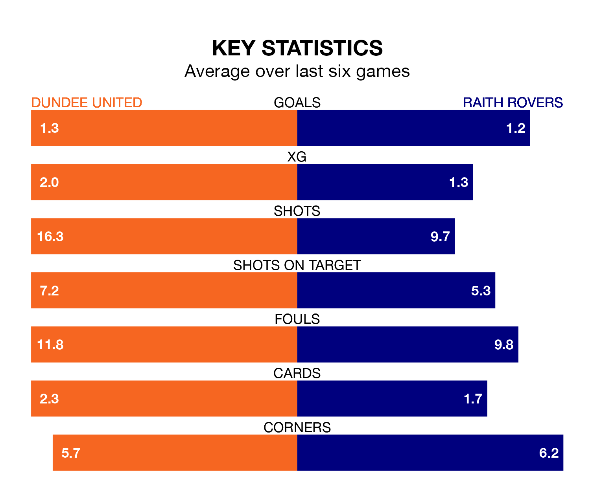

The Championship's top two sides face each other at Tannadice Park in Saturday's kick-off, when Dundee United host second-placed Raith Rovers.
Dundee have picked up 17 wins and eight draws from 30 games so far this season, and sit one point above the visitors going into the 3pm match.
Raith, meanwhile, have won 17 and drawn seven of 29, picking up 58 points.
With 57 goals in 30 games so far this season, Dundee are the league's highest scorers with 1.9 goals per game. And they are conceding fewer than average, letting in 21 goals at a rate of 0.7 per game.
Raith are also above average scorers, with 1.7 goals per game, compared to a league average of 1.4. They have conceded 1.2 goals per game.
With Jack Walton between the sticks, United can rely on one of the league's safest pair of hands. He has kept 15 clean sheets in his 30 appearances this season, and no 'keeper has prevented the opposition scoring more often in the Championship.
In Rovers' net, Maciej Dabrowski has eight clean sheets in 27 games. He has conceded a goal every 74 minutes, 80% more often than the 135 minutes between goals for Walton.
In the last 10 years, Dundee and Raith have played each other on eight occasions. Dundee won two of them, Raith three, and they drew three times.
On average, the Terrors scored 1.2 goals and Raith 1.0 in those matches.
Their last meeting was on February 16, when Raith won 2-1 at home.
The Terrors are in mixed form in the Championship, with two wins and two draws from their last six games.
With three wins and two draws over that period, the visitors' form is better – they have taken 11 points from 18, compared to the home side's eight.
Dundee's last match was on March 23, a 1-1 draw against Inverness CT, with Louis Moult getting the goal for the Terrors.
Raith drew 0-0 with Queen's Park last time out, on March 16.
Updated: 12:39 (UTC), 26/03/24